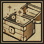
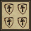
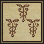
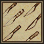
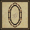
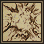
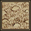
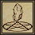

| Spell | Resources | Mana | Skill Required | |
|---|---|---|---|---|
| Clumsy | 1 Blood Moss 1 Nightshade | |||
| Create Food | 1 Garlic 1 Ginseng 1 Mandrake Root | |||
 | Feeblemind | 1 Ginseng 1 Nightshade | ||
 | Heal | 1 Garlic 1 Ginseng 1 Spider's Silk | ||
| Magic Arrow | 1 Black Pearl 1 Nightshade | |||
 | Night Sight | 1 Spider's Silk 1 Sulfurous Ash | ||
 | Reactive Armor | 1 Garlic 1 Spider's Silk 1 Sulfurous Ash | ||
| Weaken | 1 Garlic 1 Nightshade | |||
| Agility | 1 Blood Moss 1 Mandrake Root | |||
 | Cunning | 1 Mandrake Root 1 Nightshade | ||
| Cure | 1 Garlic 1 Ginseng | |||
 | Harm | 1 Nightshade 1 Spider's Silk | ||
| Magic Trap | 1 Garlic 1 Spider's Silk 1 Sulfurous Ash | |||
|  | Magic Untrap | 1 Blood Moss 1 Sulfurous Ash | ||
 | Protection | 1 Garlic 1 Ginseng 1 Sulfurous Ash | ||
 | Strength | 1 Mandrake Root 1 Nightshade | ||
| Bless | 1 Garlic 1 Mandrake Root | |||
| Fireball | 1 Black Pearl 1 Sulfurous Ash | |||
 | Magic Lock | 1 Blood Moss 1 Garlic 1 Sulfurous Ash | ||
| Poison | 1 Nightshade | |||
 | Telekinesis | 1 Blood Moss 1 Mandrake Root | ||
 | Teleport | 1 Blood Moss 1 Mandrake Root | ||
 | Unlock | 1 Blood Moss 1 Sulfurous Ash | ||
| Wall of Stone | 1 Blood Moss 1 Garlic | |||
| Arch Cure | 1 Garlic 1 Ginseng 1 Mandrake Root | |||
|  | Arch Protection | 1 Garlic 1 Ginseng 1 Mandrake Root 1 Sulfurous Ash | ||
| Curse | 1 Garlic 1 Nightshade 1 Sulfurous Ash | |||
| Fire Field | 1 Black Pearl 1 Spider's Silk 1 Sulfurous Ash | |||
|  | Greater Heal | 1 Garlic 1 Ginseng 1 Mandrake Root 1 Spider's Silk | ||
| Lightning | 1 Black Pearl 1 Mandrake Root 1 Sulfurous Ash | |||
| Mana Drain | 1 Black Pearl 1 Mandrake Root 1 Spider's Silk | |||
| Recall | 1 Black Pearl 1 Blood Moss 1 Mandrake Root | |||
|  | Blade Spirit | 1 Black Pearl 1 Mandrake Root 1 Nightshade | ||
 | Dispel Field | 1 Black Pearl 1 Garlic 1 Spider's Silk 1 Sulfurous Ash | ||
 | Incognito | 1 Blood Moss 1 Garlic 1 Nightshade | ||
|  | Magic Reflect | 1 Garlic 1 Mandrake Root 1 Spider's Silk | ||
| Mind Blast | 1 Black Pearl 1 Mandrake Root 1 Nightshade 1 Sulfurous Ash | |||
| Paralyze | 1 Garlic 1 Mandrake Root 1 Spider's Silk | |||
| Poison Field | 1 Black Pearl 1 Nightshade 1 Spider's Silk | |||
| Summon | 1 Blood Moss 1 Mandrake Root 1 Spider's Silk | |||
| Dispel | 1 Garlic 1 Mandrake Root 1 Sulfurous Ash | |||
| Energy Bolt | 1 Black Pearl 1 Nightshade | |||
|  | Explosion | 1 Black Pearl 1 Mandrake Root 1 Sulfurous Ash | ||
| Invisibility | 1 Blood Moss 1 Nightshade | |||
| Mark | 1 Black Pearl 1 Blood Moss 1 Mandrake Root | |||
 | Mass Curse | 1 Garlic 1 Mandrake Root 1 Nightshade 1 Sulfurous Ash | ||
| Paralyze Field | 1 Black Pearl 1 Ginseng 1 Spider's Silk | |||
 | Reveal | 1 Blood Moss 1 Sulfurous Ash | ||
 | Chain Lightning | 1 Black Pearl 1 Blood Moss 1 Mandrake Root 1 Sulfurous Ash | ||
| Energy Field | 1 Black Pearl 1 Mandrake Root 1 Spider's Silk 1 Sulfurous Ash | |||
 | Flame Strike | 1 Spider's Silk 1 Sulfurous Ash | ||
|  | Gate Travel | 1 Black Pearl 1 Mandrake Root 1 Sulfurous Ash | ||
| Mana Vampire | 1 Black Pearl 1 Blood Moss 1 Mandrake Root 1 Spider's Silk | |||
| Mass Dispel | 1 Black Pearl 1 Garlic 1 Mandrake Root 1 Sulfurous Ash | |||
 | Meteor Swarm | 1 Blood Moss 1 Mandrake Root 1 Spider's Silk 1 Sulfurous Ash | ||
| Polymorph | 1 Blood Moss 1 Mandrake Root 1 Spider's Silk | |||
 | Earthquake | 1 Blood Moss 1 Ginseng 1 Mandrake Root 1 Sulfurous Ash | ||
 | Energy Vortex | 1 Black Pearl 1 Blood Moss 1 Mandrake Root 1 Nightshade | ||
| Resurrection | 1 Blood Moss 1 Garlic 1 Ginseng | |||
 | Air Elemental | 1 Blood Moss 1 Mandrake Root 1 Spider's Silk | ||
| Daemon | 1 Blood Moss 1 Mandrake Root 1 Spider's Silk 1 Sulfurous Ash | |||
|  | Earth Elemental | 1 Blood Moss 1 Mandrake Root 1 Spider's Silk | ||
| Fire Elemental | 1 Blood Moss 1 Mandrake Root 1 Spider's Silk 1 Sulfurous Ash | |||
 | Water Elemental | 1 Blood Moss 1 Mandrake Root 1 Spider's Silk |